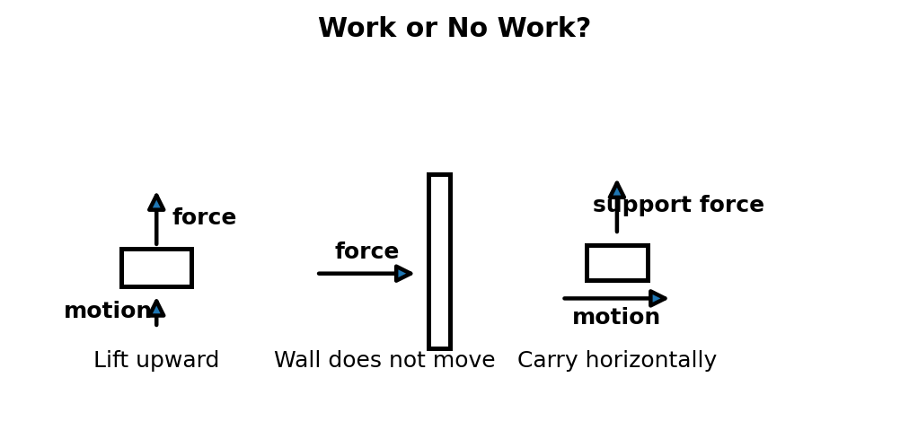
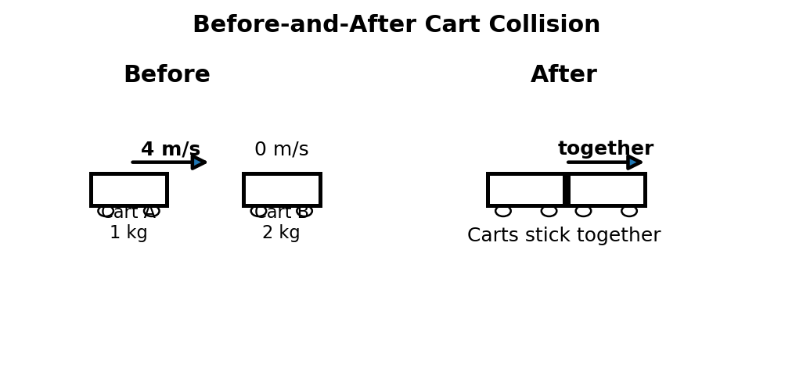
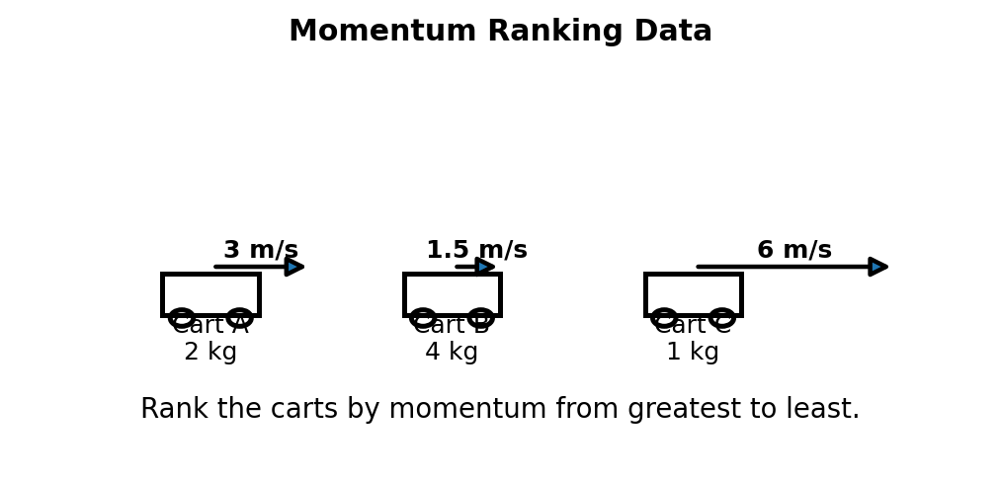
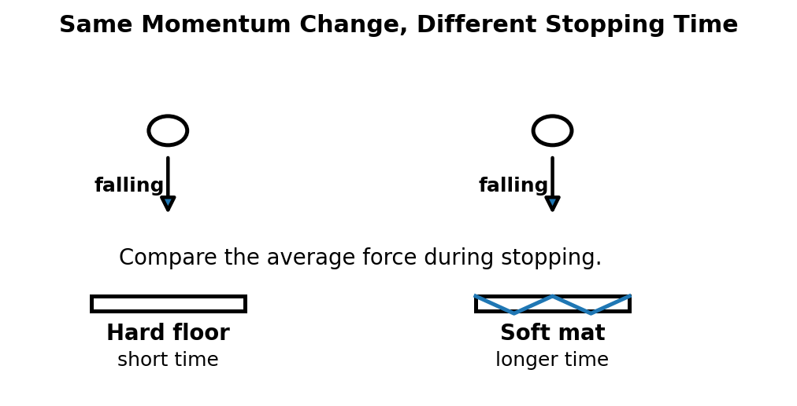
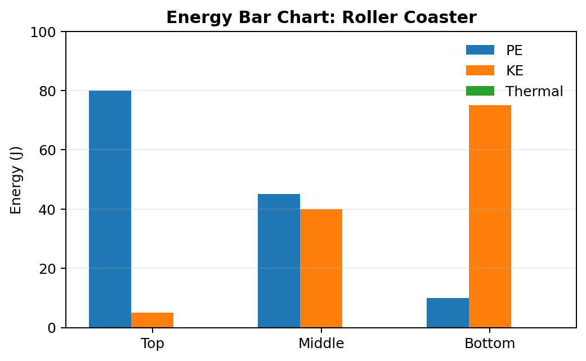
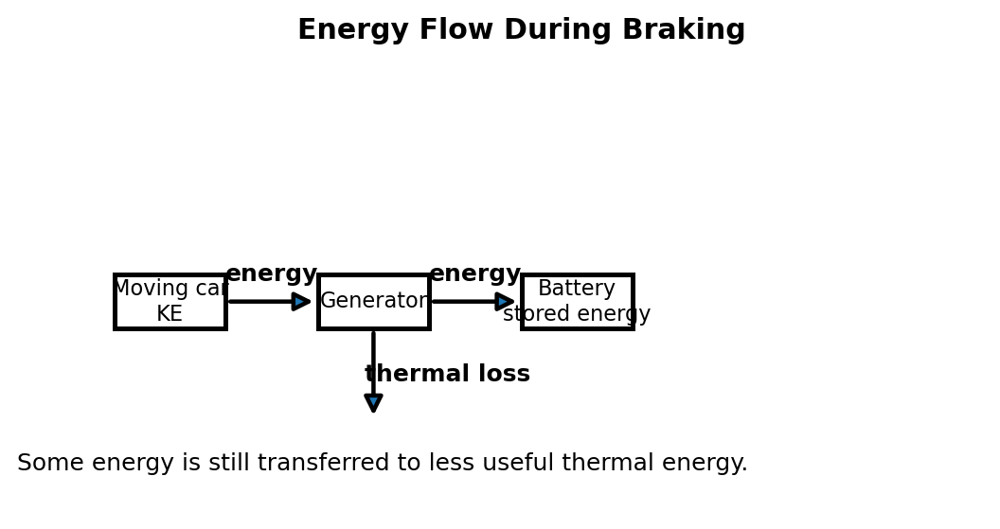
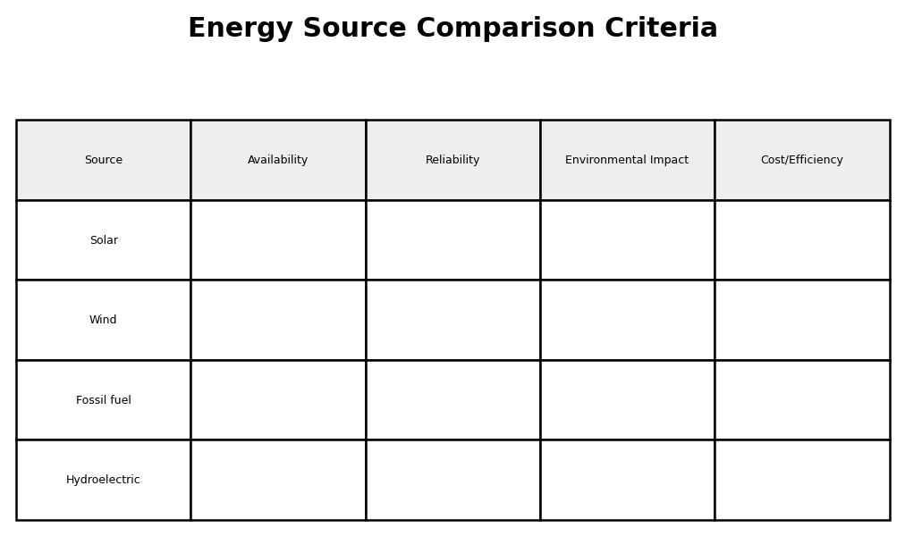
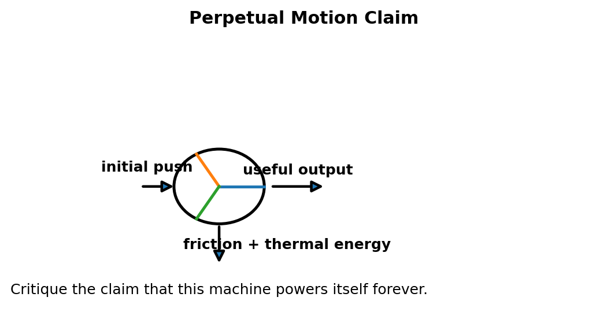

Conceptual Physics — Unit 4: Momentum and Energy
Assessment Plan
Unit 4: Momentum and Energy
Essential Standard
Students will analyze momentum and energy as conserved quantities by explaining impulse, momentum change, collisions, work, power, kinetic energy, potential energy, conservation of energy, energy transfer, and energy use in real-world systems.
This unit remains conceptual before computational. The following formulas and symbolic relationships are enough for the entire unit.
- Momentum: $p=mv$
- Impulse: $J=Ft$
- Impulse-momentum relationship: $J=\Delta p$
- Conservation of momentum: $p_{before}=p_{after}$
- Work: $W=Fd$
- Power: $P=\frac{W}{t}$
- Gravitational potential energy: $PE=mgh$
- Kinetic energy: $KE=\frac{1}{2}mv^2$
No more than these eight formulas/symbolic relationships should be required for Unit 4 assessments.
Learning Ladder
| Rung | I Can Statement | Science Practice | DOK | Level |
|---|---|---|---|---|
| 8 | I can design, defend, or critique a complete momentum-energy model for an unfamiliar real-world system using diagrams, data, equations, conservation laws, and evidence. | Construct Explanations / Argue from Evidence | DOK 4 | Above |
| 7 | I can compare competing explanations of a collision, energy transfer, or energy-source claim and justify which explanation better fits physics evidence. | Analyze and Evaluate Models | DOK 4 | Above |
| 6 | I can connect diagrams, before-and-after models, data tables, graphs, formulas, and written scenarios to explain momentum or energy changes. | Use Models / Explain Phenomena | DOK 3 | Essential |
| 5 | I can identify and correct misconceptions about momentum, impulse, conservation, work, power, kinetic energy, potential energy, or energy efficiency. | Critique Reasoning | DOK 3 | Essential |
| 4 | I can calculate momentum, impulse, work, power, kinetic energy, potential energy, or simple before-and-after quantities and interpret the answer in context. | Use Mathematical Thinking | DOK 2 | Essential |
| 3 | I can interpret collision diagrams, impulse situations, energy bar charts, work diagrams, and energy transformation models. | Develop and Use Models | DOK 2 | Essential |
| 2 | I can define and recognize key terms such as momentum, impulse, conservation, collision, work, power, kinetic energy, potential energy, and efficiency. | Identify Patterns / Use Vocabulary | DOK 1 | Essential |
| 1 | I can recognize whether a situation involves motion, collision, energy storage, energy transfer, energy transformation, or energy loss to the surroundings. | Observe and Classify | DOK 1 | Essential |
Format: 3–5 minute warm-up, quick check, image prompt, vocabulary check, mini-whiteboard response, card sort, energy-transfer sort, or exit ticket
Purpose: Check whether students can recognize basic momentum and energy vocabulary, classify simple systems, and distinguish momentum, impulse, work, power, kinetic energy, potential energy, and conservation.
Assessment Ideas
- Collision Vocabulary Snapshot Can Be Assessed After Unit 4, Section 4.1 — Students view simple collision or sports images and identify whether each situation is best described using momentum, impulse, force, or time of contact.
- Energy Type Card Sort Can Be Assessed After Unit 4, Section 4.3 — Students sort examples into kinetic energy, gravitational potential energy, elastic potential energy, thermal energy, chemical energy, or mechanical energy.
- Work or No Work? Can Be Assessed After Unit 4, Section 4.3 — Students classify short scenarios based on whether a force causes displacement in the direction of the force.
- Energy Source or Energy Transformation? Can Be Assessed After Unit 4, Section 4.5 — Students decide whether examples describe an energy source, an energy carrier, an energy transformation, or energy transferred to the surroundings.
What this tells the teacher:
Students who struggle here need more direct support with vocabulary and classification before moving into before-and-after models, calculations, conservation reasoning, or energy-system explanations.
Format: Exit ticket, diagram interpretation, short calculation, ranking task, energy bar chart, collision model, partner check, or whiteboard response
Purpose: Check whether students can apply formulas, interpret diagrams, rank quantities, and connect simple numerical results to the physical meaning of momentum and energy.
Assessment Ideas
- Momentum Ranking Task Can Be Assessed After Unit 4, Section 4.1 — Students rank carts, balls, or vehicles by momentum using mass and velocity data, then explain one ranking comparison.
- Impulse and Contact Time Diagram Can Be Assessed After Unit 4, Section 4.1 — Students compare two stopping situations, such as catching an egg with stiff hands versus soft hands, and explain how time affects average force.
- Before-and-After Momentum Model Can Be Assessed After Unit 4, Section 4.2 — Students use a simple cart collision diagram to determine whether total momentum before and after is consistent.
- Energy Bar Chart Interpretation Can Be Assessed After Unit 4, Section 4.4 — Students interpret energy bar charts for a pendulum, roller coaster, ramp, or falling object and identify how energy transforms.
What this tells the teacher:
Students at this level can usually use formulas and diagrams in familiar situations. Errors reveal whether students are confusing momentum with force, impulse with momentum, work with effort, energy conservation with “energy disappearing,” or speed with kinetic energy.
Format: Constructed response, misconception analysis, CER, ranking explanation, diagram critique, graph explanation, gallery walk, or group whiteboard defense
Purpose: Check whether students can reason strategically, explain cause and effect, connect multiple representations, and correct common misconceptions about momentum and energy.
Assessment Ideas
- Impulse Safety Explanation Can Be Assessed After Unit 4, Section 4.1 — Students explain why airbags, padded gyms, crumple zones, or bending knees reduce injury risk without changing the total change in momentum.
- Collision System Analysis Can Be Assessed After Unit 4, Section 4.2 — Students define a system for a collision, identify internal and external forces, and explain whether momentum is conserved for that system.
- Work-Energy Misconception Response Can Be Assessed After Unit 4, Section 4.4 — Students respond to the claim, “If an object stops moving, its energy is gone,” and revise the explanation using energy transfer.
- Energy Source Claim Critique Can Be Assessed After Unit 4, Section 4.5 — Students critique a claim about hydrogen, solar power, fossil fuels, or a “free-energy” device using conservation of energy and evidence.
What this tells the teacher:
This level shows whether students understand the physics behind formulas and vocabulary. These tasks are useful for deciding who needs reteaching on system boundaries, contact time, energy transfer, work-energy reasoning, or conservation laws.
Format: Performance task, extended response, investigation reflection, modeling task, critique task, engineering analysis, or strategy defense
Purpose: Check whether students can synthesize collision data, energy diagrams, formulas, system definitions, and real-world evidence in unfamiliar momentum-energy situations.
Assessment Ideas
- Build a Collision Model from Evidence Can Be Assessed After Unit 4, Section 4.2 — Students receive before-and-after cart data, identify the system, calculate or compare momentum, and defend whether the model follows conservation of momentum.
- Design a Safer Collision System Can Be Assessed After Unit 4, Section 4.1 or 4.2 — Students design a safety improvement for a helmet, car bumper, gym mat, egg drop, or package-delivery system using impulse and energy reasoning.
- Energy Transformation Audit Can Be Assessed After Unit 4, Section 4.4 or 4.5 — Students trace energy through a device or system, identify useful and less-useful energy transfers, and defend whether energy is conserved.
- Critique a Perpetual Motion Claim Can Be Assessed After Unit 4, Section 4.5 — Students evaluate a claim that a machine produces more energy than it uses, identify the physics problem, and defend a corrected explanation using energy conservation.
What this tells the teacher:
DOK 4 tasks show whether students can transfer momentum and energy understanding to unfamiliar systems and defend reasoning using conservation laws, diagrams, formulas, and evidence.
Summative Assessment Plan
Assessment is designed for a 45-minute time limit.
The Unit 4 summative will be created as one consolidated HTML file with six versions of the assessment, an answer key, and a standardized two-page answer sheet. Test questions will be printed without workspaces so students use the answer sheet for responses and formula work.
Summative Assessment
Assessment File Structure
The summative file will include six versions of the assessment. Each version should assess the same Unit 4 standards, DOK levels, vocabulary expectations, misconception checks, diagram skills, collision-modeling skills, energy-modeling skills, and formula skills, but with varied numbers, contexts, diagrams, wording, and answer order.
Recommended Student Assessment Structure
Questions 1–16: Multiple Choice — Students answer on the standardized bubble sheet.
- 5 Questions DOK 1 — Vocabulary, basic recognition, momentum versus impulse, work versus no work, energy type recognition, conservation language, and energy-source classification.
- 6 Questions DOK 2 — Interpreting collision diagrams, ranking momentum, applying impulse, calculating work or power, interpreting energy bar charts, and identifying energy transformations.
- 4 Questions DOK 3 — Analyzing misconceptions, connecting impulse to safety, interpreting system boundaries, explaining energy transfer, and choosing the best conservation-based explanation.
- 1 Question DOK 4 — Evaluating a model, critique, investigation-based reasoning, engineering-design reasoning, or choosing the best evidence-supported explanation.
Questions 17–20: Free Response / Formula and Reasoning Questions — These are the last four questions of each assessment version. Students complete these on the back side of the standardized answer sheet in four numbered quadrants.
- Question 17: Formula / momentum and impulse reasoning using $p=mv$, $J=Ft$, or $J=\Delta p$.
- Question 18: Formula / work, power, potential energy, or kinetic energy reasoning using $W=Fd$, $P=\frac{W}{t}$, $PE=mgh$, or $KE=\frac{1}{2}mv^2$.
- Question 19: Collision, system, before-and-after model, or conservation of momentum explanation.
- Question 20: Energy transformation, conservation of energy, efficiency, energy-source critique, or short CER-style reasoning task.
Answer Key and Answer Sheet Pages
After the six assessment versions, the summative file will include an answer key.
The final two pages of the file will be a standardized answer sheet:
- Answer Sheet Page 1: Assessment Name, Student Name, bubble area for selecting version number, and bubbles for multiple-choice questions 1–16.
- Answer Sheet Page 2: Prints on the back of Page 1 and is divided into four quadrants labeled 17, 18, 19, and 20 for the free-response formula and reasoning questions.
Question-Type Balance
- Standard wording: about 5 questions
- Inverted wording: about 5 questions
- Context-rich wording: about 6 questions
- Vocabulary / diagram / model-based wording: about 4 questions
Assessment Bank Note
The assessment bank should remain open-response, short-answer, diagram-based, graph-based, collision-model-based, energy-bar-chart-based, and explanation-based. Bank items should not be written as multiple-choice questions. Selected bank items can later be adapted into multiple-choice summative questions with misconception-based distractors for questions 1–16.
Scoring Recommendation
Suggested weighting: Multiple Choice: 16 points; Free Response: 16 points total, 4 points per quadrant; Total: 32 points.
- 4: Accurate answer, clear reasoning, correct vocabulary, correct formula use or model, and complete explanation.
- 3: Mostly correct with minor error or missing detail.
- 2: Partial understanding shown, but reasoning, diagram, graph, or calculation is incomplete.
- 1: Minimal correct physics shown.
- 0: Blank, unrelated, or no meaningful evidence of understanding.
Holistic Rubric
A — Highly Proficient
The student demonstrates a strong and flexible understanding of Unit 4 concepts. Work is accurate, well-organized, and supported by clear reasoning. The student can explain momentum, impulse, conservation of momentum, work, power, kinetic energy, potential energy, conservation of energy, and energy sources in familiar and unfamiliar situations. The student can interpret collision models, energy bar charts, system diagrams, and real-world energy claims, use formulas appropriately, critique models, and defend claims using evidence.
B — Proficient
The student demonstrates solid understanding of the essential Unit 4 concepts. Most work is accurate, and the student can complete standard and moderately complex tasks independently. The student can calculate momentum, impulse, work, power, kinetic energy, and potential energy, identify energy transformations, explain conservation ideas, and interpret simple collision or energy diagrams. Explanations are generally clear, though they may lack some precision or depth.
C — Developing Proficiency
The student demonstrates partial but passable understanding of Unit 4 concepts. The student can complete many routine tasks but may need support with system boundaries, conservation of momentum, impulse reasoning, work-energy relationships, energy bar charts, speed-squared reasoning, or energy-source analysis. Work may contain errors or incomplete explanations, but there is enough evidence that the student understands the main ideas.
Not Yet — Insufficient Evidence
The student does not yet demonstrate sufficient understanding of the essential Unit 4 concepts. Work shows major errors, missing reasoning, confusion between force and momentum, confusion between impulse and momentum, incorrect formula use, weak collision interpretation, weak energy-transfer reasoning, or weak connections between conservation laws and evidence. The student may need reteaching, additional practice, or reassessment to demonstrate proficiency.
Strictly Assessment Bank
This bank is organized by DOK so future formative versions and summative versions can be assembled quickly. The bank should remain open-response, short-answer, diagram-based, graph-based, collision-model-based, energy-bar-chart-based, and explanation-based. Bank questions should not be multiple choice.
Figure naming convention for future assessment files: use unit4-dok#-#-problem#.png or descriptive names in the figures/ folder.
Match each term to its definition.
Terms: 1. Momentum 2. Impulse 3. Work 4. Kinetic energy 5. Potential energy
Definitions:
- Energy an object has because of motion
- Force applied over a time interval
- Mass in motion
- Energy stored because of position or arrangement
- Energy transferred when a force moves an object through a distance
Which term best matches this definition?
“The principle that the total momentum of a system remains unchanged when no net external impulse acts on the system.”
State whether each situation is best described as momentum, impulse, work, or power.
- A moving bowling ball is difficult to stop.
- A soccer player follows through while kicking a ball.
- A student lifts a backpack from the floor to a desk.
- Two motors do the same job, but one finishes faster.
Complete the sentence using the best vocabulary term: Energy due to motion is called __________ energy.
A book is held motionless above the floor. Which type of mechanical energy does it have because of its height?
Classify each situation as work or no work. Explain each choice in a few words.
- A student holds a heavy box still.
- A student lifts the box upward.
- A student pushes on a wall that does not move.
- A student carries a backpack horizontally at constant height.

State whether each quantity is related more directly to momentum or kinetic energy.
- Depends on velocity direction
- Depends on speed squared
- Can be positive or negative in one-dimensional motion
- Always increases if speed increases, regardless of direction
In your own words, explain what it means for energy to be conserved.
Classify each as an energy source, energy transformation, or energy storage.
- Sunlight reaching a solar panel
- A battery before it is connected to a circuit
- Chemical energy changing into thermal energy in a campfire
- Water stored behind a dam
A roller coaster car is highest at the top of a hill and fastest at the bottom. Identify the main energy type at each location.
Which word best completes the sentence?
A collision where objects stick together is called an __________ collision.
Identify whether each example involves mainly momentum conservation, energy conservation, or both.
- Two carts collide on a nearly frictionless track.
- A pendulum swings down and back up.
- A ball bounces off the floor.
- A car brakes and warms its tires and brakes.
A 3 kg cart moves at 4 m/s. Determine the cart’s momentum.
Determine the momentum of a 0.5 kg ball moving at 12 m/s.
A 20 N force acts on a puck for 0.40 s. Determine the impulse delivered to the puck.
A ball’s momentum changes from 8 kg m/s to 20 kg m/s. Determine the impulse that acted on the ball.
A student pushes a cart with a force of 15 N for a distance of 3 m. Determine the work done on the cart.
A machine does 600 J of work in 10 seconds. Determine the power output.
A 2 kg object is lifted 5 m above the ground. Use $g \approx 10\text{ m/s}^2$ to determine the gravitational potential energy gained.
A 4 kg object moves at 3 m/s. Determine its kinetic energy.
Two carts move toward each other on a low-friction track.
Cart A: 2 kg moving right at 3 m/s
Cart B: 1 kg moving left at 4 m/s
Determine the total momentum of the two-cart system. Clearly state the direction.
A 1 kg cart moving at 6 m/s sticks to a 2 kg cart at rest. Determine the total momentum of the carts before the collision.

A pendulum has 40 J of gravitational potential energy at the top of its swing. Ignoring air resistance, determine its kinetic energy at the lowest point.

A car moving at 20 m/s has kinetic energy $KE$. Another identical car moves at 40 m/s. Compare the second car’s kinetic energy to the first car’s kinetic energy.

A student says, “A larger object always has more momentum than a smaller object.” Explain the misconception and revise the statement.

A baseball player follows through after hitting a ball. Explain how follow-through relates to impulse and change in momentum.
A gymnast lands on a soft mat instead of a hard floor. Explain why the soft mat reduces injury risk even if the gymnast’s change in momentum is the same.

A student says, “Momentum is not conserved in a crash because the cars stop.” Explain why this statement may be incorrect depending on the system chosen.
A small car and a large truck collide. During the collision, the force on the car and the force on the truck are equal in size. Explain how their momentum changes compare and why their motion changes can still be very different.
A student says, “Work is being done because I am tired from holding a heavy box.” Explain the physics meaning of work and revise the statement.
A roller coaster car moves down a hill and speeds up. Explain the energy transformation taking place, and describe what changes if friction is included.

A student says, “At the bottom of the swing, the pendulum has used up all its energy.” Do you agree? Explain using conservation of energy.
A car doubles its speed. A student says, “It should take twice as much work to stop.” Critique the claim using kinetic energy.
A machine makes lifting a load easier by reducing the force needed. Explain why the machine does not create energy.

Hydrogen is sometimes described as a clean fuel. Explain why hydrogen can be useful as an energy carrier, but not automatically a new energy source.
A student says, “Solar panels create energy from nothing.” Critique the statement and revise it using energy transformation language.
A student collects before-and-after data from two carts that collide and stick together.
- Define the system.
- Describe what data are needed before the collision.
- Describe what data are needed after the collision.
- Explain how the student can test whether momentum is conserved.
- Identify one possible reason the data may not match perfectly.
Design a short investigation that shows how impulse depends on contact time.
- Materials
- Procedure
- What students should measure or compare
- What pattern would support the impulse-momentum relationship
- One likely misconception and how the investigation addresses it
A student claims, “Airbags reduce injuries because they reduce the passenger’s change in momentum.”
- Critique the claim.
- Explain what the airbag actually changes.
- Explain how force, time, impulse, and momentum change are related.
- Write a corrected explanation.
A firecracker moving through the air explodes into two pieces.
- Describe the momentum of the system before the explosion.
- Describe how the momenta of the pieces combine after the explosion.
- Explain why momentum can still be conserved even though kinetic energy may change.
- Identify the system you are analyzing.

A student creates an energy bar chart for a roller coaster but shows total energy increasing as the coaster rolls downhill.
- Critique the model.
- Explain what should happen to gravitational potential energy.
- Explain what should happen to kinetic energy.
- Explain how friction changes the mechanical energy but not the total energy.
Design a short investigation that shows conservation of mechanical energy using a pendulum, ramp, marble, or spring.
- Materials
- Procedure
- What students should observe or measure
- How the evidence connects to energy transformation
- One limitation or source of error
- One likely misconception and how the investigation addresses it
A student says, “A machine that multiplies force is producing extra energy.” Evaluate the statement using force, distance, work input, work output, and energy conservation.
A car company advertises a vehicle that “recaptures energy while braking.”
- Explain what energy transformation occurs during normal braking.
- Explain what changes during regenerative braking.
- Explain why this does not violate conservation of energy.
- Identify where some energy still becomes less useful.

A student compares two energy sources and says, “The best energy source is always the one that produces the most energy.” Critique the claim and propose a better evidence-based comparison that includes at least four criteria.

A group designs an egg-drop container. Their first design uses a rigid shell with no padding, and their second design uses a larger container with flexible padding. Use impulse and energy ideas to explain which design should better protect the egg and why.
A toy car rolls down a ramp and collides with a stationary cart. Some students analyze the event using momentum, and others analyze it using energy. Explain what each conservation law can reveal about the situation and why both models may be useful.
A website claims to sell a device that powers itself forever after one initial push.
- Identify the physics claim being made.
- Explain why the claim conflicts with conservation of energy.
- Describe what evidence would be required to take the claim seriously.
- Explain why ordinary friction and thermal energy matter in the analysis.
